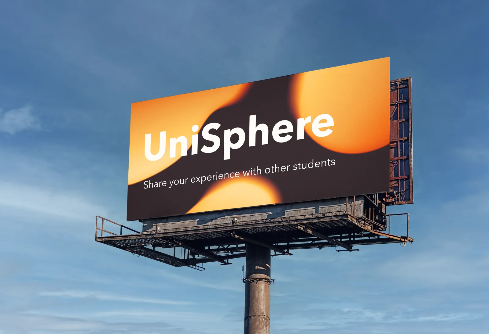
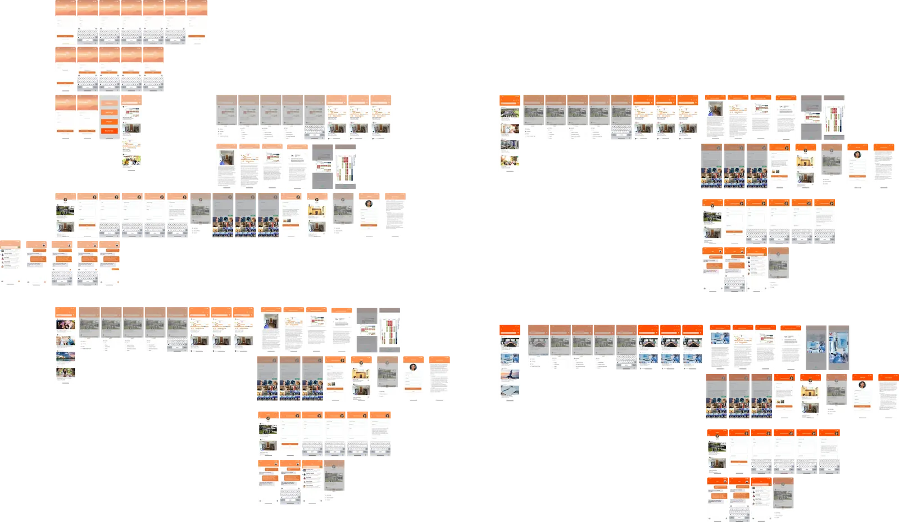
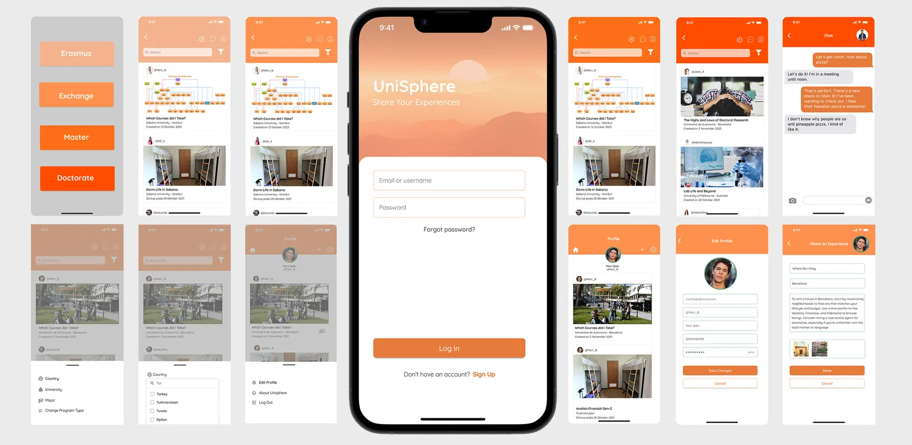

← My works/ 05
Mobile app & UI/UX · 2022 – 2023
UniSphere
Moving abroad for school is scary, and the best advice is scattered across random group chats. UniSphere gives students one place to find people who've been there.

The problem
Students moving abroad have no single place to connect, ask questions, and learn from people who've done it before.
What we did
A mobile app where students filter by university and program and find advice they can actually trust before they relocate.
Background
Plenty of social apps, none for this
There are tons of social apps, but none built for students moving to a new city or country for school. Students heading abroad for Erasmus, an exchange, a master's or a PhD end up piecing things together from WhatsApp groups, Instagram pages and forums you can't search.
We wanted to build something just for them.
Goals
Less anxiety on arrival
- A community where international students support each other
- A place for practical questions: courses, housing, city life
- Filtering by country, city, university and major
- A clear, welcoming interface that reduces anxiety for new arrivals
Research
What students told us they needed
We talked informally with students who'd studied abroad. The same needs kept coming up:
- Reliable housing information
- Course recommendations and reviews
- Connecting with people before arriving
- Guidance on workload and expectations
- Emotional support and community
So the feed had to be global, but filtered: by country, university and major, grouped by why you're going.
Concept
Four paths, four feeds
We built the app around four pathways: Erasmus, Exchange, Master's and PhD. Each became its own section, separated visually and structurally, so a master's student mostly sees posts from other master's students and the feed feels relevant instead of generic.
Short-term programs highlight social life and course choices; long-term paths focus on research, living arrangements and careers. Each section has its own accent color, all built on one shared Figma component system.

Features
What's in the app
- Four sections: Erasmus, Exchange, Master's, PhDYou start in your own category, but can explore the others freely.
- Advanced filteringBy university, country or city, and department or major.
- Community posts & Q&AAsk and answer questions, or share tips.
- Profiles with purpose & locationTransparency makes interactions more trustworthy.
- Figma component libraryConsistent icons, type, color and layouts across every screen.
Visual design
Why orange
We tested several palettes and read up on color psychology before landing on orange.
- It reads as warm, energetic, optimistic and social
- It helps new arrivals feel welcome instead of anxious
- It stands apart from blue-dominated social platforms
Every category's accent fits within the shared styles, with clean hierarchy for mobile, high contrast for accessibility, and a friendly, minimal language.

My role
What I did
- Co-designed the concept and user structure
- Created user flows and wireframes in Figma
- Built reusable Figma component sets
- Designed the home feed, filtering interface and profile screens
- Contributed to the color system and visual direction
- Prepared polished mockups for presentation
Outcome
A big move, a little less overwhelming
Purpose-specific sections, solid filtering and a warm visual identity give students abroad a structured way to connect, ask questions and share what they're going through.
Reflection
What this taught me
Purpose-based navigation cuts down on noise. When people already feel overwhelmed, clear structure and a warm palette do more for them than decorative UI ever could. Next time, I'd test the flows with students in different countries and tighten onboarding for first-time arrivals.
Back to the start · 01
RTS Lab
Unifying science, storytelling and interface for a research lab.